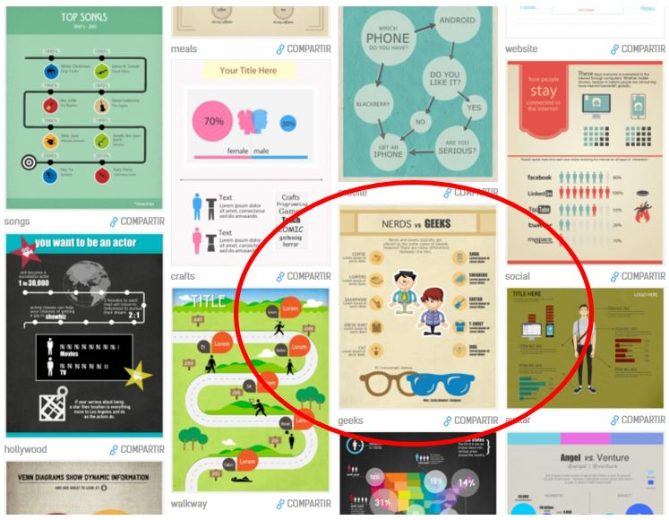

Fase tres.En clase.
A la hora de trabajar con vuestros alumnos en clase, os voy a proponer dos posibilidades para consolidar conocimientos mediante el JUEGO:
Primera opción: mediante el uso de Infografías.
Como docentes, somos conscientes de la importancia que han adquirido en el ámbito educativo las infografías como transmisores de conocimientos a nuestros alumnos.
Así, mediante la confección de Infografías por parte de vuestros alumnos, éstos harán un repaso de distintos contenidos trabajados en casa sobre los distintos complementos verbales.
Además, gracias a ellas podéis confeccionar un juego interactivo, como indica Manuela Fernández, para practicar con vuestros alumnos siguiendo los siguientes pasos:
Diseñar una Infografía a modo de tablero para jugar.
En los distintos complementos verbales insertar una URL de un vídeo explicativo acerca del complemento correspondiente. Para ello, habréis elaborado con anterioridad vuestro propio vídeo incrustando cuestionarios.
Una vez resuelto el cuestionario, comprobad las respuestas aportadas por cada alumno y decidís si continúa con el siguiente complemento verbal o, por el contrario, debe visualizar de nuevo el vídeo y responder a la preguntas planteadas.
Por cada complemento superado, se le puede aportar al alumno un premio simbólico que incremente su motivación por seguir aprendiendo y superarse en cada apartado del juego.
A continuación, os ofrezco varios ejemplos de Infografías acerca de los complementos verbales y los pasos a seguir para analizarlos en el contexto oracional.
Existen muchísimas en Internet, sin embargo, os voy a proporcionar dos herramientas para que seáis vosotros mismos los encargados de elaborarlas y así se adapte a nuestras necesidades temáticas del momento y poder compartirlas libremente en el momento que lo deseemos.
Easel.ly
Herramienta web de gratuita de uso sencillo de carácter intuitivo que, a partir diversos tipos de plantillas o partiendo de cero, te permite incluir texto, enlaces, imágenes, modificar las propias formas que aparecen por defecto en la propia plantilla etc.
Para poder acceder a ella, tendréis que crear vuestra cuenta en Easelly. Una vez acabada, os ofrece la posibilidad de guardarla online o exportar infografía en formato pdf, jpg, png o web para compartirlas de modo online.

Piktochart
Piktochart constituye una herramienta online gratuita que, de la misma manera que la anterior, os va a permitir representar de un modo gráfico contenidos teóricos estableciendo entre ellos diferentes tipos de relaciones lógicas, gracias a la combinación del código lingüístico y no linguïstico, susceptibles de interpretación por parte del alumnado.
Para poder iniciar el diseño de vuestra Infografía con Piktochart, debéis registraros indicando un usuario, una cuenta de correo electrónico así como una clave.
Así, una vez dentro de la aplicación, a modo de ejemplo, se presentan una serie de vídeos tutoriales así como una guía para orientar en el uso de esta herramienta.
Como podréis comprobar, para vuestra Infografía podéis aprovechar plantillas ya presentes en la propia aplicación o generar la vuestra propia desde el principio: "Create your own".
Una vez terminada, tenéis la opción de exportar vuestro diseño gráfico como una imagen, html o guardarlo online y hacerlo público.
Segunda opción: lesson plan y Symbaloo
En el siguiente apartado os muestro un trabajo realizado también por Manuela Fernández.
Para repasar los distintos complementos verbales, esta profesora, confecciona una lesson plan con la herramienta Symbaloo , gracias a la cual se va guiando el aprendizaje del alumnado mediante un itinerario a lo largo de la cual:
Consulta de un vídeo sobre el complemento verbal en cuestión.
Resuelven las cuestiones planteadas al respecto.
Acceden a enlaces.
Exposición y explicación ante toda la clase de los conocimientos adquiridos. En el siguiente enlace nos refleja, a modo de ejemplo, una presentación realizada por una alumna haciendo uso de la herramienta Emaze.
Para poder acceder al interior de la lesson plan, tenéis que iniciar sesión como profesor y añadir este Lesson Plan a vuestra cuenta.
ACCESO: LESSON PLAN CAMINADO POR LA SINTAXIS
Por si no conocéis la herramienta gratuita Symbaloo Edu, os propongo la visualización del siguiente vídeo de presentación:
De la misma manera, podéis confeccionar vuestra propia lesson plan.